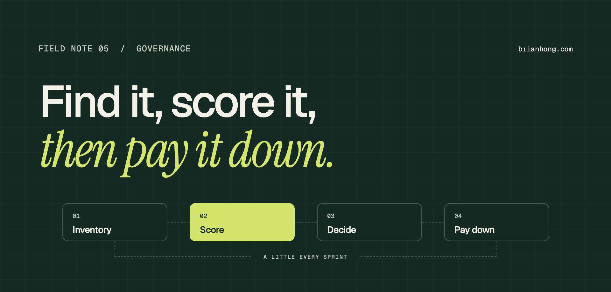

Salesforce tech debt audit: how to find, score, and pay down technical debt
Every org older than a few years is carrying debt. An audit turns a vague feeling into a scored list, and a scored list is something you can pay down a little every sprint.

You inherit an org. The Account object has hundreds of custom fields and nobody can say what a third of them do. One record save fires a Workflow Rule, two Process Builders, a Flow, and a trigger. A request to add one picklist value takes three weeks because nobody is sure what it will break.
That is technical debt, and nearly every Salesforce org older than a few years has it. Most teams know it’s there. Few can say how much, where it is, or which parts are actually dangerous.
A Salesforce tech debt audit is a structured review of an org’s metadata, automation, code, security model, and integrations that finds what is unused, duplicated, outdated, or risky. It ends with a scored list of findings and a decision for each one: retire, consolidate, refactor, or accept.
What a Salesforce tech debt audit is
A tech debt audit is an inventory plus a judgment. The inventory counts what is in the org. The judgment says which of those things cost you something and what to do about each.
Technical debt is any past decision that makes today’s work slower, riskier, or more expensive than it should be. In Salesforce it rarely looks like bad code. It looks like a field nobody fills in, a flow nobody dares to turn off, a profile cloned eleven times, and an integration still calling an API version from 2015.
Salesforce treats this as core architecture work. Its Well-Architected guidance says that failing to plan for, audit for, and remediate technical debt is a sure way to end up with a poorly architected system, and that the work belongs on the roadmap with clear deliverables and dates.
An audit is not a cleanup. Keeping the two apart is what makes the audit finishable. You can audit a large org in a few weeks. You pay the debt down over the following quarters, in priority order.
Where Salesforce technical debt comes from
Most Salesforce technical debt comes from reasonable decisions made under time pressure, then never revisited. It is rarely one person’s fault.
- Deadlines The quick fix ships on Friday with a promise to do it properly later. Later never gets scheduled.
- Turnover The admin who built it left. The reason it exists left with them, so nobody feels safe removing it.
- No intake process Every request gets built as asked. Nobody checks whether a field or flow for it already exists.
- Platform change Salesforce retires features. Workflow Rules, Process Builder, old API versions, and Salesforce Classic pages become debt without anyone touching them.
- Mergers and migrations Two orgs become one. Both data models survive, along with both sets of automation.
- Abandoned projects A pilot ends or a package is uninstalled halfway. Its fields, permission sets, and page layouts stay behind.
Some debt is taken on deliberately, and that’s fine. A hard-coded value to hit a launch date is a fair trade if it’s written down and paid back. The damage comes from debt nobody recorded.
Signs your org needs an audit
You need a tech debt audit when small changes start taking a long time and nobody can explain why. These are the usual symptoms:
- Simple changes take weeks Most of the time goes to working out what the change might break, not to building it.
- Deployments fail on unrelated tests An old Apex test breaks every release, and the fix is to comment it out again.
- Nobody will delete anything Fields, flows, and reports only ever get added. The org grows every quarter.
- Users see errors on save Row lock errors, CPU time limits, and “too many SOQL queries” show up on ordinary record edits.
- You’re near a platform limit An object is close to its custom field cap, or the org is close to its Apex code limit.
- A deadline is coming A feature retirement, an Agentforce rollout, a merger, or a new team inheriting the org.
The last one matters more than it used to. AI agents read your metadata and your records. An org full of unlabeled fields and overlapping automation is harder for an agent to work in, for the same reasons it’s harder for a new admin. I covered that side in Salesforce data readiness for AI.
The seven areas to audit
A complete Salesforce technical debt audit covers seven areas. For each one, count what exists, count what is actually used, and note anything that is risky.
- 1. Data model Custom objects and fields, fill rates, fields with no description, duplicate fields that hold the same thing, and how close each object is to its field limit. Enterprise Edition allows 500 custom fields per object and Unlimited allows 800.
- 2. Automation Workflow Rules, Process Builders, flows, and triggers per object. Look for several automations on one object, inactive flows, old flow versions, and anything still on a retired tool.
- 3. Apex and code Classes on old API versions, test coverage, tests that assert nothing, hard-coded IDs and URLs, SOQL or DML inside loops, and Visualforce or Aura that could be retired.
- 4. Security and access Number of profiles, permission sets with no assignments, users with Modify All Data or View All Data, inactive users still holding licenses, and your Health Check score.
- 5. Integrations Connected apps nobody recognizes, integrations calling old API versions, integration users with admin profiles, and credentials stored in code.
- 6. Interface and reports Page layouts and record types nobody is assigned to, Lightning pages overloaded with components, and reports and dashboards nobody has run in a year.
- 7. Documentation Fields and flows with blank descriptions, no data dictionary, no record of why anything was built. This is the debt that makes all the other debt expensive.
Automation is usually the heaviest area. If you still have Workflow Rules or Process Builder running, start there. They reached end of support on December 31, 2025, and the retire-or-rebuild decisions are the same ones this audit asks for. The steps are in migrating Workflow Rules and Process Builder to Flow.
“Nobody deletes what they don’t understand. So the org only ever grows.”
The tools that do the inventory
You can run a thorough Salesforce tech debt audit with free tools. The main change to know about is that Salesforce Optimizer, the report many audit checklists still point to, has been retired. Salesforce began removing it with the Winter ’26 release.
- Org Check A free, open-source app from Salesforce Labs, installed from AppExchange. It scores custom fields, flows, Apex, profiles, permission sets, and more, and flags items such as unused fields and roles without users. It is the closest replacement for Optimizer.
- Security Health Check In Setup. Compares your password, session, and sharing settings against the Salesforce baseline and gives you a score.
- Salesforce Code Analyzer Free, from the CLI or VS Code. Version 5 runs PMD for Apex, ESLint for JavaScript, RetireJS, a regex engine, and a Flow Scanner in one pass.
- Where is this used? A button on every custom field in Object Manager. It lists the layouts, flows, formulas, Apex, and reports that reference the field.
- SOQL and the Tooling API For counts no screen gives you: classes by API version, inactive flows, unassigned permission sets, and reports nobody runs.
- Event log files The API Total Usage event shows which integrations call which API versions, with the connected app and user behind each call.
A handful of queries cover a lot of ground. Run them in the Developer Console, the Salesforce CLI, or Salesforce Inspector:
Check API versions on the integration side too. Salesforce retired Platform API versions 21.0 through 30.0 in Summer ’25. Versions 31.0 through 40.0 lose support in Summer ’27 and are scheduled for retirement in Summer ’28, when calls to them will fail. An integration built in 2016 and never touched since is probably on that list.
Paid tools such as Elements.cloud, Metazoa Snapshot, and Gearset go further on dependency mapping and change history. They save time in large orgs. They aren’t required to get a useful first audit done.
Score every finding
Score each finding on three things: the risk of leaving it, the drag it puts on daily work, and the effort to fix it. Without a score, an audit is a long list that nobody acts on.
Use a 1 to 5 scale for each. Then rank by risk plus drag, divided by effort. High numbers go first.
| Finding | Risk | Drag | Effort | Priority |
|---|---|---|---|---|
| Integration on API version 29.0 | 5 | 2 | 2 | 3.5 |
| 12 users with Modify All Data | 5 | 1 | 1 | 6.0 |
| 4 automations on Opportunity | 3 | 5 | 4 | 2.0 |
| 140 Account fields under 1% filled | 1 | 3 | 2 | 2.0 |
| Trigger with no test assertions | 3 | 2 | 3 | 1.7 |
| 300 reports not run in a year | 1 | 2 | 1 | 3.0 |
- Risk What happens if you leave it. Security exposure, a retirement date, data loss, or a production outage score high.
- Drag How much it slows people down every week. Confusing layouts, slow saves, and changes that need three people to review score high.
- Effort How long the fix takes, including testing and the conversations needed to get a decision.
The numbers are a way to start the conversation. They aren’t precise, and they don’t need to be. What they do is move the cheap, high-risk items to the top, which is where most audits find their first month of work.
Retire, consolidate, refactor, or accept
Every finding gets one of four decisions. Writing the decision down, with a name next to it, is what turns an audit into a plan.
- Retire Nobody uses it and nothing depends on it. Remove it. This is the cheapest fix and usually the largest group.
- Consolidate Several things do one job. Merge five flows on one object into one or two, or forty profiles into a few profiles plus permission sets.
- Refactor It’s needed but badly built. Rebuild it properly: bulkify the trigger, replace hard-coded IDs with custom metadata, move it to a supported tool.
- Accept It’s debt, but fixing it costs more than living with it. Record why, set a date to look again, and move on.
Accept is a real answer. An audit that insists on fixing everything loses the room. An ugly but stable integration that nobody needs to change can sit at the bottom of the list for years.
How to delete things safely
To remove metadata safely, hide it before you delete it, and wait one full business cycle in between. Fear of breaking something is the main reason debt never gets paid, so make the process boring.
- Check the data Is the field empty, or last populated years ago? Is the flow’s last run date recent? Usage tells you more than opinions do.
- Check references Use Where is this used?, search the code base, and check reports, list views, email templates, and integrations that name the field.
- Ask the owner One message to the business owner: “We plan to retire this on this date. Tell us if you need it.” Silence after two reminders is an answer.
- Back it up Export the data and retrieve the metadata to source control, so both can be restored.
- Hide first Remove the field from layouts and permissions, or deactivate the flow. Add “DEPRECATED” and the date to the label and description.
- Wait, then delete Leave it hidden through a month-end and a quarter-end if you can. If nobody notices, delete it. Deleted custom fields stay restorable for 15 days.
Do this in batches by object, through a sandbox, with a normal deployment. Deleting metadata directly in production is how a cleanup turns into an incident.
Make the case to leadership
Leaders fund technical debt work when it’s described as business cost and risk. “We have 600 unused fields” gets a shrug. These get a budget:
- Delivery speed “Changes to Opportunity take three weeks because four automations overlap. After consolidation, the same change takes three days.”
- Risk with a date “Two integrations call API versions that Salesforce will retire. When that happens, order sync stops.”
- Cost “We pay for 60 licenses assigned to inactive users.”
- Readiness “We can’t put an AI agent on this data until the fields it reads are labeled and deduplicated.”
Then ask for a standing share of capacity, not a project. Many teams start with 15 to 20 percent of each sprint. A fixed share survives reprioritization better than a cleanup project, which is the first thing cut when a deadline moves.
Record the starting numbers before you fix anything. Salesforce’s Well-Architected guidance lists documented before-and-after KPIs as a mark of healthy debt work. Field counts, automations per object, deployment failure rate, and average time to deliver a change are enough.
A 30-60-90 day plan
- Days 1–30: Inventory Install Org Check, run Health Check and Code Analyzer, and run the queries. Count everything across the seven areas. Don’t fix anything yet except open security holes.
- Days 31–60: Score and decide Score each finding. Review the top fifty with business owners and record a decision and an owner for each. Agree the capacity share with leadership.
- Days 61–90: First payments Clear the cheap, high-risk items: excess admin permissions, inactive users, old API versions. Start hiding the first batch of unused fields and flows.
- After day 90: Keep paying Work the backlog every sprint. Re-run the counts each quarter and report the trend.
Resist the urge to fix things during the first month. Fixing while you inventory means you never finish the inventory, and you spend your effort on whatever you happened to find first.
Keep the debt from coming back
An audit lowers the balance. Guardrails stop it from climbing again. Four are enough for most teams:
- Descriptions are required No new field, flow, or permission set without a description that says what it’s for and who asked.
- One intake path Every request goes through one queue, where someone checks whether the thing already exists.
- Record debt when you take it If you ship a shortcut, add a backlog item the same day. Deliberate debt with a ticket is manageable.
- A quarterly check Re-run the counts after each seasonal release and read the release updates for upcoming retirements.
These are governance habits more than technical ones. If nobody owns them, they fade within a quarter. A small Center of Excellence gives them a home, and clear data stewardship roles keep the field list honest.
A Salesforce tech debt audit doesn’t need a big team or a paid tool. It needs a few weeks of counting, a simple score, and a named owner for each decision. The org won’t be clean at the end of it. It will be understood, and after that every release can leave it a little better than before.
Frequently asked questions
What is a Salesforce tech debt audit?
A Salesforce tech debt audit is a structured review of an org’s metadata, automation, code, security model, and integrations to find what is unused, duplicated, outdated, or risky. The output is a scored list of findings, each with an owner and a decision: retire, consolidate, refactor, or accept.
How long does a Salesforce technical debt audit take?
For a mid-sized org, plan on two to four weeks for the audit itself: about a week to inventory, a week to score, and a week or two to review findings with owners. Paying the debt down takes longer and works best as a fixed share of every sprint.
What tools do I need to audit Salesforce technical debt?
You can do a solid audit with free tools: Org Check from Salesforce Labs for metadata, Security Health Check for settings, Salesforce Code Analyzer for Apex and Flow, the Where is this used? button for field references, and SOQL or Tooling API queries for counts. Paid tools add deeper dependency mapping.
How often should you audit a Salesforce org for tech debt?
Run a full audit once a year and a light check every quarter. Tie the quarterly check to something that already happens, such as release planning after each Salesforce seasonal release, so new debt is caught while it is still small.
Is it safe to delete unused custom fields in Salesforce?
Yes, if you check first. Confirm the field is empty or stale, check every reference with Where is this used?, look for it in integrations and reports, then hide it for one full business cycle before deleting. Deleted custom fields can be restored for 15 days.
Who should own technical debt in Salesforce?
The Salesforce platform owner or Center of Excellence owns the debt backlog, and each finding has a named business owner who decides whether the thing is still needed. The admin team does the cleanup. Without a named owner on each item, nothing gets retired.
How much time should a team spend on technical debt?
A common starting point is 15 to 20 percent of each sprint or release. A fixed share works better than a one-time cleanup project because debt keeps arriving, and small steady payments don’t need a separate budget approval.